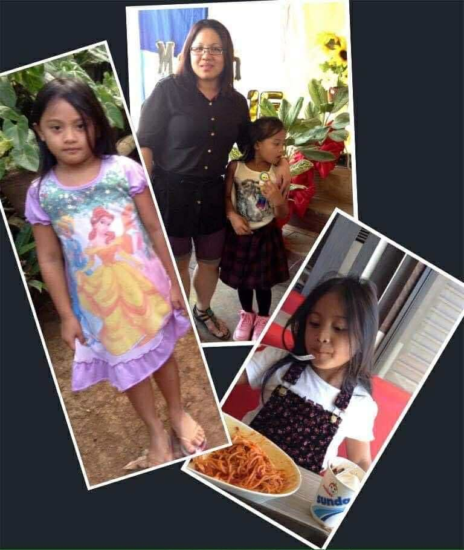
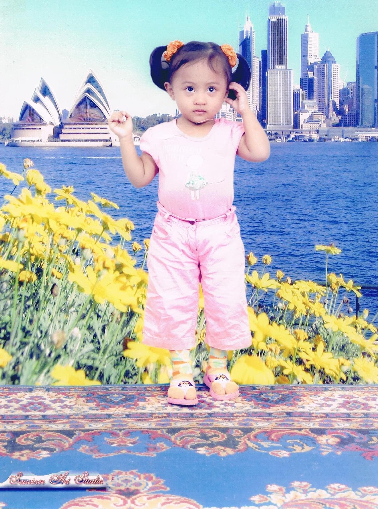
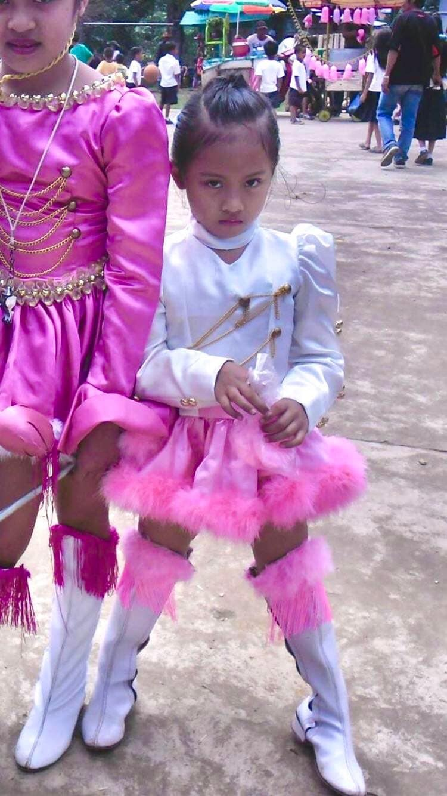
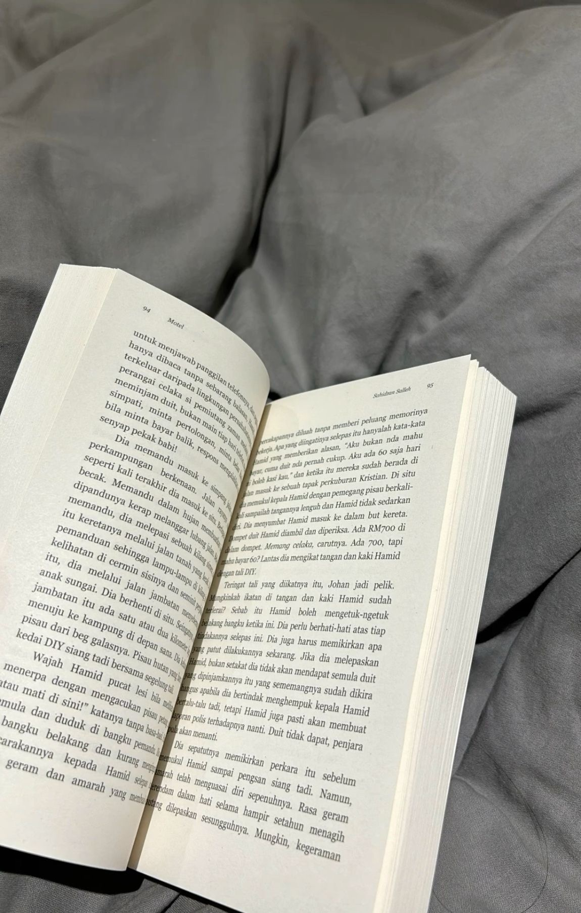

Hi! I’m Charlize. I love creativity, dressing up, cooking, and dreaming big. Welcome to my personal journey and story.

As a child, I loved playing and exploring. My mom always supported me and bought me the things that made me happy. Those simple moments shaped my creativity and confidence.

I started my elementary education at Mountain View College Elementary School, which helped me build my academic foundation. Later, I transferred to LLAES, another private institution that continued to shape my learning experience. Growing up in Christian schools deeply influenced my values, discipline, and faith.

Dressing up and playing with my Barbie dolls sparked my imagination. I loved creating stories and pretending to be different characters.
Through dressing up, I developed creativity, confidence, and the belief that I could become anything I wanted.
Imagining different roles and scenarios shaped my ability to dream big and see possibilities beyond my surroundings.
Watching my mom and my tita cook inspired my love for cooking. In our family, food represents unity, tradition, and love. Cooking became my way of expressing care and connection.
Because of my mom and tita, I learned that cooking is not just a skill — it is an art and a tradition passed down in our family. Seeing them prepare meals with care and passion made me want to learn and improve. Now, whenever I cook, I feel connected to them and to our family traditions.

I enjoy reading books, especially those that teach real-life lessons and facts. Academics are important to me because I want to make my mom proud. She inspires me every day — she is smart, professional, and hardworking. I look up to her and hope to become like her someday.
Ever since I was young, I dreamed of becoming a doctor. I want to help people, heal them, and make a difference in their lives. I know the journey will not be easy, but I am determined to work hard and give my best to achieve this dream. I believe that with faith, perseverance, and dedication, I can make it happen. I am flexible, kind, smart, and loving. I value friendship and have made many meaningful connections throughout my journey. I believe that life is not just about achievements, but also about the relationships we build and the love we share.